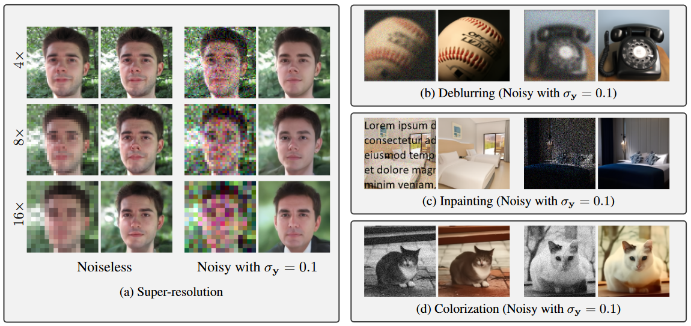

Denoising Diffusion Restoration Models
Bahjat Kawar1, Michael Elad1, Stefano Ermon2, Jiaming Song21Technion, 2Stanford University
ArXiv PDF Code
DDRM uses pre-trained DDPMs for solving general linear inverse problems. It does so efficiently and without problem-specific supervised training.

Abstract
Many interesting tasks in image restoration can be cast as linear inverse problems. A recent family of approaches for solving these problems uses stochastic algorithms that sample from the posterior distribution of natural images given the measurements. However, efficient solutions often require problem-specific supervised training to model the posterior, whereas unsupervised methods that are not problem-specific typically rely on inefficient iterative methods. This work addresses these issues by introducing Denoising Diffusion Restoration Models (DDRM), an efficient, unsupervised posterior sampling method. Motivated by variational inference, DDRM takes advantage of a pre-trained denoising diffusion generative model for solving any linear inverse problem. We demonstrate DDRM's versatility on several image datasets for super-resolution, deblurring, inpainting, and colorization under various amounts of measurement noise. DDRM outperforms the current leading unsupervised methods on the diverse ImageNet dataset in reconstruction quality, perceptual quality, and runtime, being 5× faster than the nearest competitor. DDRM also generalizes well for natural images out of the distribution of the observed ImageNet training set.Demo Images
Show me
images that are
white Gaussian noise of σ=0.05
| Original |  |
|
|
|
|
|
| Degraded | |
|
|
|
|
|
| Restored | |
|
|
|
|
|
Variational Inference
Quantitative Results
| PSNR ↑ | KID ↓ | NFEs ↓ | |
|---|---|---|---|
| DGP | 22.70 | 27.60 | 1500 |
| RED | 26.16 | 21.21 | 500 |
| SNIPS | 34.32 | 0.49 | 1000 |
| DDRM | 35.64 | 7.14 | 20 |
BibTeX
@article{kawar2022denoising,
title={Denoising Diffusion Restoration Models},
author={Bahjat Kawar and Michael Elad and Stefano Ermon and Jiaming Song},
year={2022},
journal={arXiv preprint arXiv:2201.11793},
}